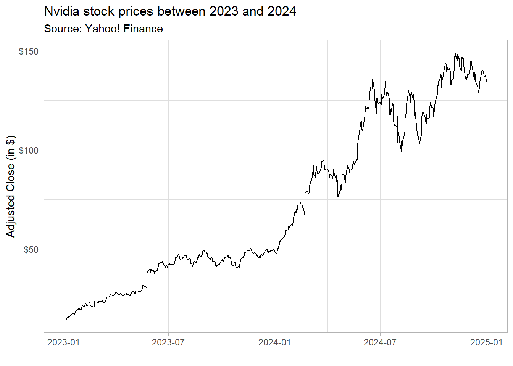

install.packages("package_name")Bridging Data with Programming - Replication
About this Document
This file replicates the codes that have been discussed in the live-session lectures of the Practical Applications in Quantitative Finance course. To ensure you can run the codes without issues, please install and load all required packages beforehand. It is always a good practice to replicate this Quarto document and experiment by making edits to the parameters. At the end of this report, you will find a suggestion on how to tweak this report — try doing some changes on your own!
Attention
This is our first lecture, and I do not expect you to fully understand the underlying code. The goal is to showcase the most important R packages, how they work, and how you can make sure to have them available in our session. As we progress through the lectures, we will have a deep-dive on some of the most important aspects of these packages, and you will have some hands-on exercises to practice your coding skills.
1. Introduction to install.packages() and library() in R
When you’re starting with R, you’ll frequently need to install and load packages to access additional functions beyond the base R functionalities. Two essential functions for this are:
install.packages()– Downloads and installs a package from CRAN (Comprehensive R Archive Network).library()– Loads an installed package so that you can use its functions
For installing new packages, the syntax is:
Note that:
- You only need to install a package once (unless you update or reinstall R).
- Packages are stored in a library (a folder on your computer).
- If a package is not available, check your internet connection or make sure CRAN is accessible.
Once a package is installed, you need to load it every time you start a new R session. The function library() makes the functions from the referred package available for use. For example, after installing ggplot2 using install.packages("ggplot2"), load it by calling:
library(ggplot2)If you forget to load a package and try to use its functions, R will throw an error:
Error in ggplot(): could not find function "ggplot"In this course, we will be mostly using a handful of packages for data collection, data wrangling, and visualization. Namely, we will be mostly working with the following packages:
tidyverse: for data manipulation and visualization, including packages such asdplyr,gpplot2, andtidyrtidyquant: for retrieving and working with financial data seriestidymodels: a set of routines for running statistical modelsglue: a simple and efficient way to interpolate stringsscales: provides functions that are particularly useful for visualization, helping scaling axes, formatting labels, and applying transformations like logarithms or percentages.ggthemes: a set of powerful themes for data visualization
For installing these packages, you could simply call:
#Install if not already available
install.packages('tidyverse')
install.packages('tidyquant')
install.packages('glue')
install.packages('scales')
install.packages('ggthemes')
#Load
library(tidyverse)
library(tidyquant)
library(tidymodels)
library(glue)
library(scales)
library(ggthemes)Alternatively, the code below searches for a given set of packages in our computer, installing only the packages that are not found. After installing all missing packages (if any) it loads all packages together:
# Package names
packages <- c("tidyverse","tidyquant","tidymodels", "glue","scales")
# Install packages not yet installed
installed_packages <- packages %in% rownames(installed.packages())
if (any(installed_packages == FALSE)) {
install.packages(packages[!installed_packages])
}
# Load all packages
invisible(lapply(packages, library, character.only = TRUE))Make sure to install all packages and load them, either by calling library() individually, or running the aforementioned code.
Note
For the remainder of the sessions, you will use financial data from multiple sources, either that being from a local .csv file or a pull from Yahoo! Finance. Whenever you are working with local files, it is always important to make sure that your R is able to locate it. To check the working directory of your session, simply type getwd(), and it will prompt your current directory. If you want to change your directory, simply type setwd('C:/path/to/your/folder') with the specific path to your desired folder. To make sure that you switched directories, you can type getwd() to confirm the new directory.
Most of the issues regarding not being able to load a specific file, like .csv and .xlsx spreadsheets can be easily solved by placing your R file (either a plain script, like myscript.R, or a quarto document, myquartodoc.qmd) in the same folder as of your data. When you open your R script or Quarto document, it will automatically set that folder (which coincides with the data folder) as the working directory. To confirm which files are available to you, you can simply type list.files() to get the list of all files that R can find in the working directory.
If you prefer, whenever you are calling a function that requires a path to your computer, you can always provide the full path of the file: for example, using "C:/Users/Lucas/Documents/GitHub/Folder/test.csv' would find the test.csv even if Folder is not your working directory.
2. Using dplyr, the data manipulation package in the tidyverse
The dplyr package is one of the core packages in the tidyverse and is designed for efficient and readable data manipulation. It provides a set of functions (also called “verbs”) that make working with data frames (or tibbles) intuitive and expressive. Key Features:
- Filter rows:
filter() - Select columns:
select() - Mutate (create new columns):
mutate() - Summarize data:
summarize() - Group operations:
group_by() - Join tables:
left_join(),right_join(),inner_join(),full_join()
For this section, you will be using a .csv file that contains Nvidia (ticker: NVDA) prices collected directly from Yahoo! Finance. You can download the data using directly on eClass® and place it in the same folder of your R/Quarto report. In my case, I have created a folder, called Assets, inside my working directory.
read.csv('Assets/NVDA.csv')%>%
select(Timestamp,Adjusted)%>%
mutate(Date=as.Date(Timestamp),
Year=year(Date))%>%
filter(Year!='2025')%>%
arrange(Date)%>%
mutate(Return = Adjusted/lag(Adjusted,1)-1)%>%
group_by(Year)%>%
summarize(
`Average Daily Return` = percent(mean(Return,na.rm=TRUE),accuracy = 0.01),
`Annualized Return`= percent(prod(1+Return,na.rm=TRUE)-1,accuracy = 0.01))# A tibble: 18 × 3
Year `Average Daily Return` `Annualized Return`
<dbl> <chr> <chr>
1 2007 0.18% 41.44%
2 2008 -0.42% -76.28%
3 2009 0.40% 131.47%
4 2010 -0.04% -17.56%
5 2011 0.02% -10.00%
6 2012 -0.03% -10.97%
7 2013 0.12% 33.52%
8 2014 0.11% 27.40%
9 2015 0.23% 67.12%
10 2016 0.51% 226.96%
11 2017 0.27% 81.99%
12 2018 -0.10% -30.82%
13 2019 0.26% 76.94%
14 2020 0.38% 122.30%
15 2021 0.36% 125.48%
16 2022 -0.20% -50.26%
17 2023 0.53% 239.02%
18 2024 0.45% 171.25% Let’s break this code down. First, the function read.csv() reads an NVDA.csv file inside the Assets subfolder. This function returns a data.frame object that is an input to the rest of the code. All other functions are from dplyr, and are intended to facilitate data wrangling. We’ll cover all these functions in our upcoming lecture.
3. Using ggplot2 for data visualization
The ggplot2 package is the most powerful and widely used data visualization package in R. It is part of the tidyverse and follows the Grammar of Graphics, a systematic approach to creating complex graphics by layering components.
Unlike base R plotting functions, like plot(), ggplot2 provides:
- Highly customizable plots. Its modular approach makes it easy to modify and extend plots.
- Elegant default themes. Default themes are aesthetically pleasing and can be customized.
- Layered structure for complex graphics. Users can combine multiple layers, change colors, themes, scales, and annotations effortlessly.
- Seamless integration with the tidyverse. It integrates seamlessly with
dplyr,tidyrandtidyquant, allowing smooth data manipulation and visualization.
The code below shows how you can use ggplot2 to load a file. It reads a .csv file containing Nvidia stock prices, processes the data, and visualizes the stock price trends for 2023 and 2024 using ggplot2. Note that I have not called library(tidyverse) again since my session already had it loaded for the previous code chunks!
read.csv('Assets/NVDA.csv')%>%
select(Timestamp,Adjusted)%>%
mutate(Date=as.Date(Timestamp))%>%
arrange(Date)%>%
filter(year(Date) %in% c(2023,2024))%>%
ggplot(aes(x=Date,y=Adjusted))+
geom_line()+
theme_light()+
labs(title = 'Nvidia stock prices between 2023 and 2024',
subtitle = 'Source: Yahoo! Finance',
x='',
y='Adjusted Close (in $)')+
scale_y_continuous(labels = dollar)
4. Using tidyr to reshape and simplify data
The tidyr package in R is designed for data cleaning and reshaping, making datasets “tidy” for easier analysis. It provides functions to pivot, separate, unite, and fill missing data efficiently. For this section, you will be using a .csv file that contains information from multiple tickers collected directly (Multiple_Assets.csv). You can download the data using directly on eClass® and place it in the same folder of your R/Quarto report. In my case, I have created a folder, called Assets, inside my working directory.
Opening this file promptly shows that the .csv file is in a very messy format, with different columns that refer to the same variable, like closing prices. Using tidyr facilitates the transitions towards a tidy format that will be key for data manipulation:
read.csv('Assets/Multiple_Assets.csv')%>%
pivot_longer(cols=matches('Open|High|Low|Close|Volume|Adjusted'),
names_to = c('Asset','Metric'),
names_sep = '\\.',
values_to = 'Value')%>%
mutate(Date=as.Date(Timestamp),
Year=year(Date))%>%
group_by(Asset,Metric,Year)%>%
summarize(Value=mean(Value,na.rm=TRUE))%>%
pivot_wider(names_from = c('Metric'),values_from = 'Value')# A tibble: 57 × 8
# Groups: Asset [3]
Asset Year Adjusted Close High Low Open Volume
<chr> <dbl> <dbl> <dbl> <dbl> <dbl> <dbl> <dbl>
1 AAPL 2007 3.86 4.58 4.65 4.51 4.59 984047751.
2 AAPL 2008 4.28 5.07 5.18 4.96 5.08 1130360498.
3 AAPL 2009 4.42 5.24 5.30 5.18 5.24 568467011.
4 AAPL 2010 7.83 9.28 9.37 9.17 9.28 599305267.
5 AAPL 2011 11.0 13.0 13.1 12.9 13.0 492298967.
6 AAPL 2012 17.4 20.6 20.8 20.4 20.6 527856818.
7 AAPL 2013 14.6 16.9 17.1 16.7 16.9 406434800
8 AAPL 2014 20.4 23.1 23.3 22.9 23.1 252610922.
9 AAPL 2015 27.0 30.0 30.3 29.7 30.0 207397617.
10 AAPL 2016 24.0 26.2 26.4 25.9 26.1 153690124.
# ℹ 47 more rows5. Collecting and exporting data
Everybody who has experience working with data is also familiar with storing and reading data in formats like .csv, .xls, .xlsx or other delimited value storage. However, if your goal is to replicate a common task at a predefined time interval, like charting weekly stock prices for a selected bundle of stocks every end-of-week, it might be overwhelming to manually perform these tasks every week. Our slides covered a handful of data sources that are widely used among finance practictioners, such as stock-level data, macroeconomic data, among others.
When it comes to stock-level data, the tidyquant is a powerful package in R that simplifies financial data retrieval and analysis. One of its key features is the ability to fetch stock market data from Yahoo! Finance using the tq_get() function.
To get historical stock prices from Yahoo! Finance, use the tq_get() function:
# Fetch historical stock prices for FANG (Facebook, Amazon, Netflix, Google) stocks
FANG_data <- tq_get(c("META","AMZN","NFLX","GOOG"), from = "2020-01-01", to = "2024-01-01")6. Using write.csv() to export a file
The write.csv() function in R allows users to export data frames to .csv (Comma-Separated Values) files. These files are commonly used for storing tabular data and can be opened in Excel, Google Sheets, or other data analysis tools. It works by defining the following arguments:
write.csv(x,file)x: The data frame to export.file: The file path where the CSV will be saved
It is now easy to use tq_get() in conjunction with write.csv() to retrieve data from Yahoo! Finance and export it to a .csv file:
write.csv(FANG_data,'FANG_prices.csv')The code above assumes that you have created the FANG_data object in your R session.
Try doing some edits on your own!
The code below downloads data for all stocks contained in the assets vector using the tq_get() function and the arguments from and to, and exports a .csv file with your newly retrieved data. Try changing this code to download data for a list of stocks of your choice and a specific timeframe. Make sure to write the date ranges in YYYY-MM-DD format.
#Define the list of assets
assets = c('MMM','GOOGL','NFLX','WEGE3.SA')
#Define the time ranges
start="2020-01-01"
end=Sys.Date() #Today
# Fetch historical stock prices for selected assets
financial_data <- tq_get(assets, from = start, to=end)
# Export it
write.csv(financial_data,'my_first_export.csv')